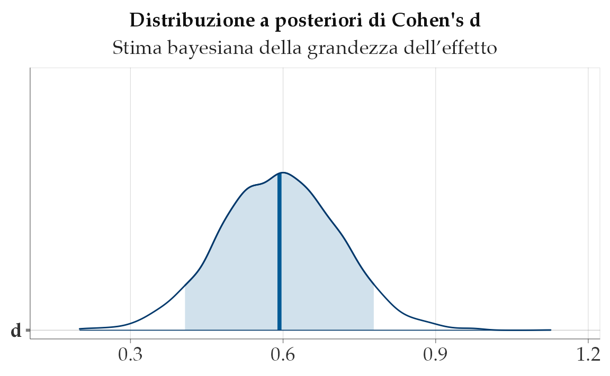

here::here("code", "_common.R") |>
source()
# Load packages
if (!requireNamespace("pacman")) install.packages("pacman")
pacman::p_load(cmdstanr, posterior, brms, bayestestR, insight)66 La grandezza dell’effetto: valutare la rilevanza pratica
“Il valore di P non misura l’importanza di un risultato. Per l’importanza, guardate all’entità dell’effetto.”
– Jacob Cohen, Statistician and psychologist
Introduzione
Nel capitolo precedente abbiamo esaminato la differenza nei punteggi di QI tra bambini nati da madri con e senza diploma di scuola superiore. L’analisi bayesiana ci ha permesso di ottenere una distribuzione a posteriori per questa differenza, da cui derivano inferenze probabilistiche ricche e sfumate. Ma un interrogativo cruciale rimane aperto: questa differenza è importante?
In psicologia, come in molte scienze applicate, non è sufficiente stabilire che un effetto esiste: bisogna valutare se l’effetto ha una magnitudine sufficiente da avere rilevanza teorica, clinica o sociale. È in questa prospettiva che si introduce il concetto di grandezza dell’effetto (effect size), una misura quantitativa dell’intensità di un risultato.
Panoramica del capitolo
- Che cosa misuriamo quando parliamo di “grandezza dell’effetto”.
- Come stimarlo con modelli bayesiani in
brms. - Come comunicarlo con intervalli e predizioni.
66.1 Perché stimare la grandezza dell’effetto
La grandezza dell’effetto fornisce un ponte tra analisi statistica e interpretazione sostanziale dei dati. Essa consente di rispondere a domande come:
- Quanto è marcata la differenza osservata?
- L’effetto ha un impatto concreto nella vita reale o nelle applicazioni cliniche?
- La variazione osservata è sufficiente a giustificare interventi, cambiamenti o nuove ipotesi teoriche?
L’American Psychological Association (APA) raccomanda di riportare sempre una misura di grandezza dell’effetto, in quanto essa fornisce un’informazione critica che va oltre la mera dicotomia “effetto presente / effetto assente”.
66.2 Standardizzare le differenze: il d di Cohen
Nel confronto tra due gruppi, una delle misure più comuni di grandezza dell’effetto è il d di Cohen, che esprime la differenza tra due medie in unità di deviazione standard:
\[ d = \frac{\mu_1 - \mu_2}{\sigma}, \]
dove:
- \(\mu_1\) e \(\mu_2\) sono le medie dei due gruppi,
- \(\sigma\) è una stima comune della deviazione standard.
L’interpretazione di d è indipendente dalle unità di misura originali, il che la rende particolarmente utile per confrontare risultati provenienti da diversi studi o contesti.
66.3 Il d di Cohen in un’ottica bayesiana
Nell’approccio bayesiano non ci limitiamo a stimare un singolo valore di d. L’idea è diversa: costruiamo una distribuzione a posteriori di valori plausibili per la grandezza dell’effetto. Questa distribuzione si ottiene combinando i campioni posteriori della differenza tra gruppi con quelli della deviazione standard residua. In questo modo, invece di una stima unica, otteniamo un quadro completo delle incertezze ancora presenti dopo aver osservato i dati.
66.3.1 Esempio pratico con brms
Riprendiamo il modello già stimato nel capitolo precedente:
kidiq <- rio::import(here::here("data", "kidiq.dta"))
fit_1 <- brm(
kid_score ~ mom_hs,
data = kidiq,
backend = "cmdstanr",
silent = 0
)Dai campioni posteriori estraiamo sia la stima della differenza tra i gruppi (b_mom_hs) sia la stima della deviazione standard residua (sigma). Dividendo i due otteniamo i campioni della distribuzione di Cohen’s d:
post <- as_draws_df(fit_1)
d_samples <- post$b_mom_hs / post$sigma66.3.2 Visualizzare la distribuzione di d
La distribuzione a posteriori di d si può esplorare graficamente. Ad esempio:
mcmc_areas(as_draws_df(tibble(d = d_samples)), pars = "d", prob = 0.89) +
labs(
title = "Distribuzione a posteriori di Cohen's d",
subtitle = "Stima bayesiana della grandezza dell’effetto"
)
Il grafico mostra l’intero intervallo di valori plausibili per la grandezza dell’effetto, mettendo in evidenza la regione che contiene l’89% degli esiti più credibili. È una rappresentazione diretta dell’incertezza che rimane anche dopo aver osservato i dati.
66.3.3 Statistiche riassuntive
Per sintetizzare numericamente i risultati si può usare la funzione describe_posterior():
bayestestR::describe_posterior(d_samples, ci = 0.89)
#> Summary of Posterior Distribution
#>
#> Parameter | Median | 89% CI | pd | ROPE | % in ROPE
#> --------------------------------------------------------------------
#> Posterior | 0.59 | [0.41, 0.78] | 100% | [-0.10, 0.10] | 0%Questa funzione restituisce la stima centrale (media o mediana), l’intervallo di credibilità, e la probabilità che la grandezza dell’effetto superi o resti al di sotto di valori soglia rilevanti.
66.3.4 Interpretare la grandezza dell’effetto
Nella tradizione frequentista è comune adottare la classificazione proposta da Cohen:
| Valore di d | Interpretazione convenzionale |
|---|---|
| ≈ 0.2 | Effetto piccolo |
| ≈ 0.5 | Effetto medio |
| ≥ 0.8 | Effetto grande |
Queste soglie sono utili come orientamento, ma rischiano di essere applicate in modo meccanico. L’approccio bayesiano offre un vantaggio importante: consente di trasformare queste soglie in domande probabilistiche. Possiamo chiederci, ad esempio, qual è la probabilità che d sia almeno pari a 0.5, oppure la probabilità che resti al di sotto di 0.2. Con i campioni posteriori queste domande trovano risposta diretta:
mean(d_samples > 0.5) # Probabilità che l'effetto sia almeno medio
#> [1] 0.7863
mean(d_samples > 0.8) # Probabilità che l'effetto sia grande
#> [1] 0.04225
mean(d_samples < 0.2) # Probabilità che l'effetto sia trascurabile
#> [1] 0.00075In questo modo non abbiamo un giudizio binario (grande/piccolo), ma una descrizione più sfumata e realistica.
66.3.5 La soglia di rilevanza pratica
In applicazioni concrete non è sufficiente stabilire che l’effetto sia diverso da zero: è necessario valutare se supera una soglia di rilevanza pratica (minimum effect of interest, o ROPE — region of practical equivalence).
Supponiamo, per esempio, che uno psicologo clinico ritenga irrilevante qualsiasi effetto inferiore a d = 0.3. In questo caso, la domanda da porsi è: qual è la probabilità che l’effetto osservato sia superiore a 0.3? La risposta si ottiene immediatamente dai campioni posteriori:
mean(d_samples > 0.3)
#> [1] 0.9932Questo numero esprime in modo diretto la probabilità che la differenza osservata abbia una rilevanza clinica concreta, spostando l’attenzione da soglie arbitrarie a valutazioni fondate sulle esigenze specifiche del contesto.
Riflessioni conclusive
Le linee guida dell’American Psychological Association (APA) sottolineano l’importanza di riportare sistematicamente le stime della dimensione dell’effetto (effect size) nella comunicazione dei risultati della ricerca. Questa raccomandazione nasce dalla consapevolezza che la mera verifica di ipotesi, spesso concentrata su un valore di probabilità, fornisce un’informazione limitata. La stima dell’effect size, al contrario, consente di quantificare la magnitudine di un fenomeno, offrendo una base più solida per valutarne la rilevanza teorica o applicativa. L’identificazione di un effetto statisticamente rilevante rappresenta dunque solo un primo passo; la sua reale interpretazione scientifica richiede una comprensione approfondita della sua entità.
Nell’ambito della statistica frequentista, la dimensione dell’effetto viene tipicamente comunicata attraverso una stima puntuale corredata da un intervallo di confidenza. Quest’ultimo descrive la variabilità attesa della stima in un’ipotetica sequenza di replicazioni dello studio. Sebbene utile, questa rappresentazione può incoraggiare, anche involontariamente, un’interpretazione dicotomica dei risultati, dove l’attenzione si concentra esclusivamente sul superamento di una soglia di significatività.
L’inferenza bayesiana propone una prospettiva alternativa, trattando la dimensione dell’effetto non come un parametro fisso ma come una variabile aleatoria. La sua incertezza viene rappresentata attraverso una distribuzione di probabilità a posteriori, che sintetizza l’evidenza proveniente dai dati osservati e dalle conoscenze preliminari, formalizzate in una distribuzione a priori. Questo quadro concettuale permette di formulare affermazioni probabilistiche dirette sull’effect size, come calcolare la probabilità che esso superi una determinata soglia di rilevanza clinica o teorica. L’incertezza viene così rappresentata in modo continuo e sfumato, evitando categorizzazioni rigide.
Questo approccio si adatta particolarmente bene all’indagine dei processi psicologici, caratterizzati da un’elevata complessità e variabilità. L’obiettivo dell’analisi bayesiana non è quello di giungere a una conclusione definitiva, ma di aggiornare in modo coerente e trasparente il grado di plausibilità associato a diverse ipotesi. In questo contesto, la stima della dimensione dell’effetto assume un ruolo centrale, diventando uno strumento inferenziale per valutare la credibilità e l’importanza pratica dei risultati ottenuti.
Adottare una prospettiva bayesiana significa quindi abbracciare un paradigma inferenziale che privilegia la valutazione probabilistica e contestualizzata rispetto alla decisione dicotomica. Questo passaggio favorisce una comunicazione scientifica più ricca e meno ambigua, contribuendo a una psicologia maggiormente riflessiva, trasparente e focalizzata sul significato sostanziale dei propri risultati.
Bibliografia
66 La grandezza dell’effetto: valutare la rilevanza pratica – Psicometria 66 La grandezza dell’effetto: valutare la rilevanza pratica – Psicometria 66 La grandezza dell’effetto: valutare la rilevanza pratica – Psicometria Psicometria
Kruschke, J. K. (2013). Bayesian estimation supersedes the t test. Journal of Experimental Psychology: General, 142(2), 573–603.